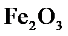
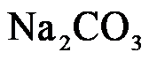
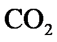
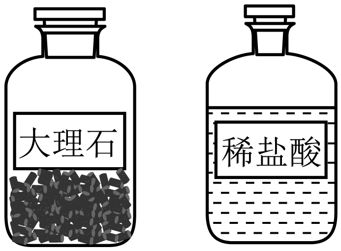
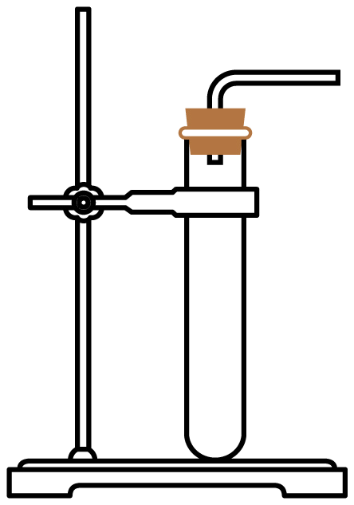
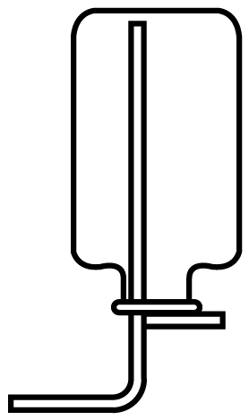
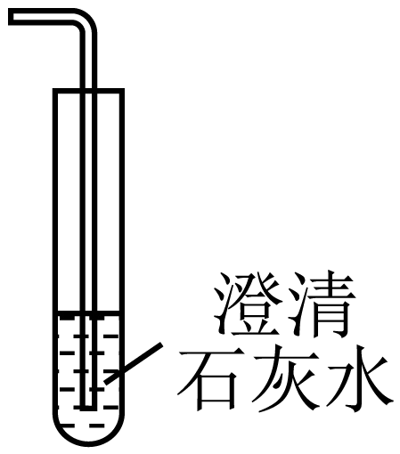
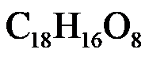
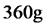

2023年北京市中考化学真题 · 选择题 第16、17、18、19、20题
我国科学家在化学、化工领域做出了重大贡献。回答9~11题。
16. 下列关于物质用途的说法不正确的是
A. 硫酸用于中和酸性废水B. 氧气用于气焊
C. 氮气用作食品保护气D. 干冰用作制冷剂
17. 向分别盛有下列物质的点滴板孔穴中滴加足量稀硫酸，无明显现象的是
A.

B. FeC. 稀溶液D. 
溶液18. 下列关于

的实验室制取及检验的说法不正确的是 |  |  |  |
A．制的药品 | B．发生装置 | C．收集方法 | D．检验 |
A. AB. BC. CD. D
中国传统节日习俗积淀着博大精深的历史文化内涵。回答19~21题。
19. 正月十五闹花灯。下列制作花灯的材料中，属于金属材料的是
A. 宣纸B. 铁丝C. 棉线D. 竹条
20. 端午插艾。艾草中含有丰富的黄酮类物质，其中矢车菊黄素的化学式为

。下列关于的说法不正确的是A. 由碳、氢、氧三种元素组成B. 相对分子质量为

C. 碳元素的质量分数最大D. 氢、氧元素的质量比为